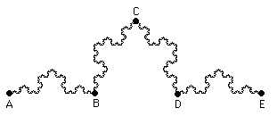

| When we speak of the distance between two points of the Koch curve, we mean the distance measured when traveling along the Koch curve between these points. |
| We have seen that the distance between A and E is infinite. What is the distance between A and B? |
|  |
| Suppose the distance between A to B is some finite number, say L. |
| Note the part of the Koch curve between A and B is congruent to the part between B and C, to the part between C and D, and to the part between D and E. |
| Consequently, if the distance between A and B is L, then the distance between A and E is 4L. |
| This contradicts our observation that the length of the Koch curve is infinite. |
| Consequently, the distance between A and B is infinite. |
Continue to the next step.
Return to Koch Curve Length Paradox.